Chapter 7: Introduction to Bayesian Time Series Analysis
Chapter07.RmdSection 7.2: Bayesian Learning of (Stationary) Autoregressive Models
Figure 7.1: U.S. GDP data
First, we load the data. Because of the extreme outliers during the COVID pandemic, we restrict our analysis to the time before its outbreak.
Next, we compute the log returns.
Now we can plot the data and its empirical autocorrelation function.
ts.plot(logret, main = "U.S. GDP log returns")
acf(logret, lag = 8, main = "")
title("Empirical autocorrelation function")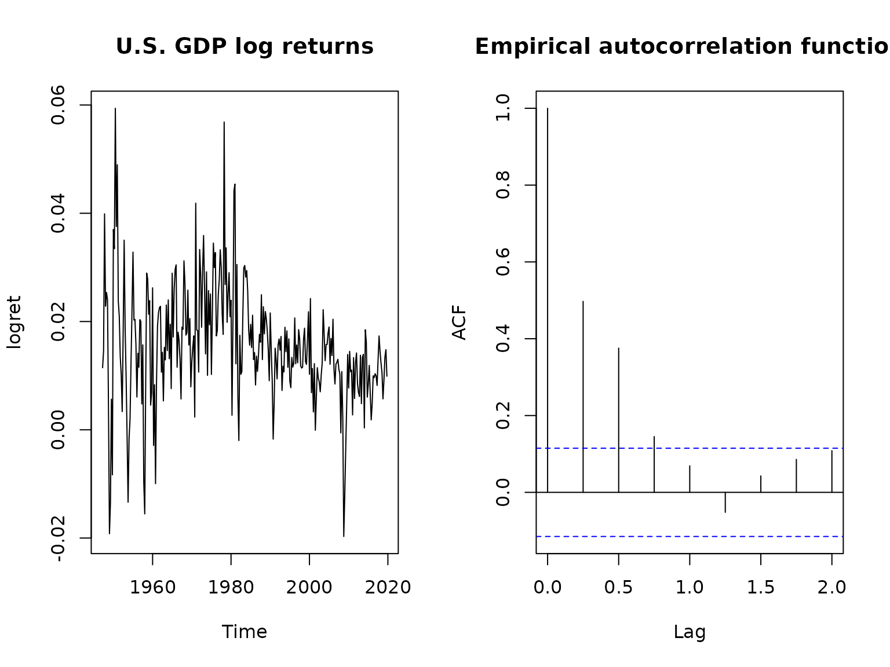
Before we move on, we define a function yielding posterior draws under a standard regression model, using the tools developed in Chapter 6.
library("BayesianLearningCode")
library("mvtnorm")
regression <- function(y, X, prior = "improper", b0 = 0, B0 = 1, c0 = 0.01,
C0 = 0.01, nburn = 1000L, M = 10000L) {
N <- nrow(X)
d <- ncol(X)
if (length(b0) == 1L) b0 <- rep(b0, d)
if (!is.matrix(B0)) {
if (length(B0) == 1L) {
B0 <- diag(rep(B0, d))
} else {
B0 <- diag(B0)
}
}
if (prior == "improper") {
fit <- lm.fit(X, y)
betahat <- fit$coefficients
SSR <- sum(fit$residuals^2)
cN <- (N - d) / 2
CN <- SSR / 2
bN <- betahat
BN <- solve(crossprod(X))
sigma2s <- rinvgamma(M, cN, CN)
betas <- matrix(NA_real_, M, d)
for (i in seq_len(M)) betas[i, ] <- rmvnorm(1, bN, sigma2s[i] * BN)
} else if (prior == "conjugate") {
B0inv <- solve(B0)
BNinv <- B0inv + crossprod(X)
BN <- solve(BNinv)
bN <- BN %*% (B0inv %*% b0 + crossprod(X, y))
Seps0 <- crossprod(y) + crossprod(b0, B0inv) %*% b0 -
crossprod(bN, BNinv) %*% bN
cN <- c0 + N / 2
CN <- C0 + Seps0 / 2
sigma2s <- rinvgamma(M, cN, CN)
betas <- matrix(NA_real_, M, d)
for (i in seq_len(M)) betas[i, ] <- rmvnorm(1, bN, sigma2s[i] * BN)
} else if (prior == "semi-conjugate") {
# Precompute some values
B0inv <- solve(B0)
B0invb0 <- B0inv %*% b0
cN <- c0 + N / 2
XX <- crossprod(X)
Xy <- crossprod(X, y)
# Prepare memory to store the draws
betas <- matrix(NA_real_, nrow = M, ncol = d)
sigma2s <- rep(NA_real_, M)
colnames(betas) <- colnames(X)
# Set the starting value for sigma2
sigma2 <- var(y) / 2
# Run the Gibbs sampler
for (m in seq_len(nburn + M)) {
# Sample beta from its full conditional
BN <- solve(B0inv + XX / sigma2)
bN <- BN %*% (B0invb0 + Xy / sigma2)
beta <- rmvnorm(1, mean = bN, sigma = BN)
# Sample sigma^2 from its full conditional
eps <- y - tcrossprod(X, beta)
CN <- C0 + crossprod(eps) / 2
sigma2 <- rinvgamma(1, cN, CN)
# Store the results
if (m > nburn) {
betas[m - nburn, ] <- beta
sigma2s[m - nburn] <- sigma2
}
}
}
list(betas = betas, sigma2s = sigma2s)
}Now we are ready to reproduce the results in the book.
Example 7.1: AR modeling of the U.S. GDP data
We begin by writing a function that sets up the design matrix for an AR() model.
ARdesignmatrix <- function(dat, p = 1) {
d <- p + 1
N <- length(dat) - p
Xy <- matrix(NA_real_, N, d)
Xy[, 1] <- 1
for (i in seq_len(p)) {
Xy[, i + 1] <- dat[(p + 1 - i) : (length(dat) - i)]
}
Xy
}We obtain draws for four AR models under the improper prior.
Figure 7.2: Exploratory model selection
Now we plot the draws for the leading coefficient, i.e., the coefficient corresponding to the highest lag in each of the models.
for (p in 1:4) {
hist(res[[p]]$betas[, p + 1], freq = FALSE, main = bquote(AR(.(p))),
xlab = bquote(phi[.(p)]), ylab = "", breaks = seq(-.75, .75, .02))
abline(v = 0, lty = 3)
}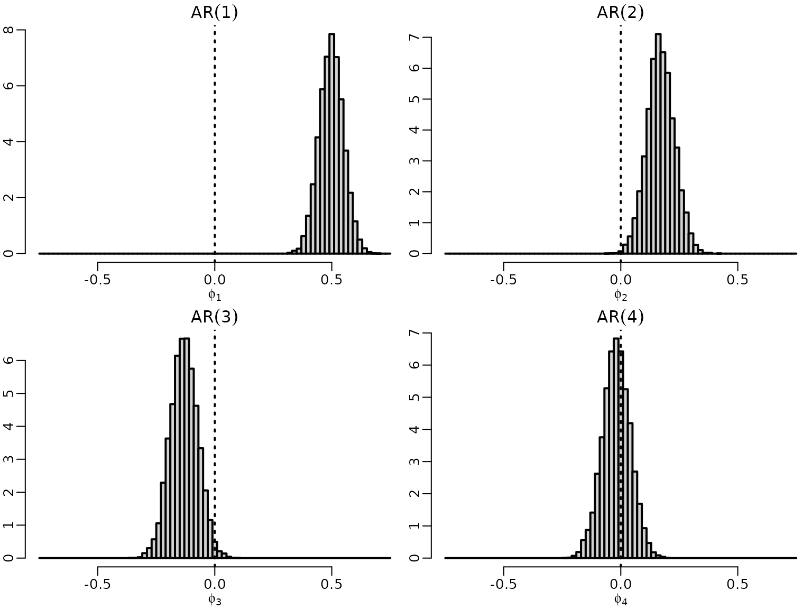
Next, we fit an AR(3) model with different priors.
y <- tail(logret, -3)
Xy <- ARdesignmatrix(logret, 3)
res_improper <- res[[3]]
res_conj_1 <- regression(y, Xy, prior = "conjugate",
b0 = rep(0, 4), B0 = diag(rep(1, 4)),
c0 = 2, C0 = 0.001)
res_semi_1 <- regression(y, Xy, prior = "semi-conjugate",
b0 = rep(0, 4), B0 = diag(rep(1, 4)),
c0 = 2, C0 = 0.001)
res_conj_2 <- regression(y, Xy, prior = "conjugate",
b0 = rep(0, 4), B0 = diag(rep(100, 4)),
c0 = 2, C0 = 0.001)
res_semi_2 <- regression(y, Xy, prior = "semi-conjugate",
b0 = rep(0, 4), B0 = diag(rep(100, 4)),
c0 = 2, C0 = 0.001)Figure 7.3: AR(3) models with improper, semi-conjugate, and conjugate priors
We now visualize the posterior of the model parameters under all those priors.
for (i in 1:5) {
if (i <= 4) {
if (i == 1) name <- bquote(zeta) else name <- bquote(phi[.(i - 1)])
dens_improper <- density(res_improper$betas[, i], bw = "SJ", adj = 2)
dens_semi_1 <- density(res_semi_1$betas[, i], bw = "SJ", adj = 2)
dens_semi_2 <- density(res_semi_2$betas[, i], bw = "SJ", adj = 2)
dens_conj_1 <- density(res_conj_1$betas[, i], bw = "SJ", adj = 2)
dens_conj_2 <- density(res_conj_2$betas[, i], bw = "SJ", adj = 2)
} else {
name <- bquote(sigma[epsilon]^2)
dens_improper <- density(res_improper$sigma2, bw = "SJ", adj = 2)
dens_semi_1 <- density(res_semi_1$sigma2, bw = "SJ", adj = 2)
dens_semi_2 <- density(res_semi_2$sigma2, bw = "SJ", adj = 2)
dens_conj_1 <- density(res_conj_1$sigma2, bw = "SJ", adj = 2)
dens_conj_2 <- density(res_conj_2$sigma2, bw = "SJ", adj = 2)
}
plot(dens_improper, main = "", xlab = name, ylab = "",
xlim = range(dens_improper$x, dens_semi_1$x, dens_semi_2$x),
ylim = range(dens_improper$y, dens_semi_1$y, dens_semi_2$y))
if (i == 1) title("Semi-conjugate priors")
lines(dens_semi_1, col = 2, lty = 2)
lines(dens_semi_2, col = 3, lty = 3)
legend("topright", c("Improper", "Tight", "Loose"), col = 1:3, lty = 1:3)
plot(dens_improper, main = "", xlab = name, ylab = "",
xlim = range(dens_improper$x, dens_conj_1$x, dens_conj_2$x),
ylim = range(dens_improper$y, dens_conj_1$y, dens_conj_2$y))
if (i == 1) title("Conjugate priors")
lines(dens_conj_1, col = 2, lty = 2)
lines(dens_conj_2, col = 3, lty = 3)
legend("topright", c("Improper", "Tight", "Loose"), col = 1:3, lty = 1:3)
}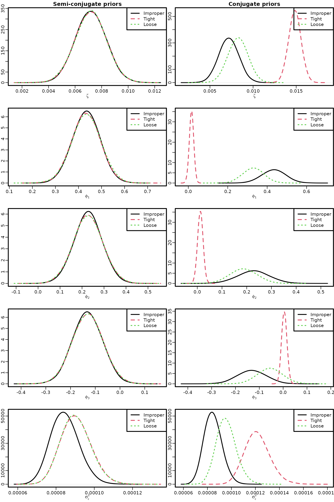
Section 7.2.2: Exploring stationarity during post-processing
We reuse the AR() models under the improper prior from above to explore stationarity for .
Figure 7.4: Checking stationarity conditions for the GDP data
hist(res[[1]]$betas[, 2], breaks = 20, freq = FALSE, main = "AR(1)",
xlab = bquote(phi), ylab = "")
plot(res[[2]]$betas[, 2:3], main = "AR(2)", xlab = bquote(phi[1]),
ylab = bquote(phi[2]), xlim = c(-2, 2), ylim = c(-1, 1),
col = rgb(0, 0, 0, .05), pch = 16)
polygon(c(-2, 0, 2, -2), c(-1, 1, -1, -1), border = 2)
draws <- res[[3]]$betas[, 2:4]
eigenvalues <- matrix(NA_complex_, nrow(draws), ncol(draws))
for (m in seq_len(nrow(draws))) {
Phi <- matrix(c(draws[m, ], c(1, 0, 0), c(0, 1, 0)), byrow = TRUE, nrow = 3)
eigenvalues[m, ] <- eigen(Phi, only.values = TRUE)$values
}
plot(eigenvalues, xlim = c(-1, 1), ylim = c(-1, 1), asp = 1,
main = "AR(3)", col = rgb(0, 0, 0, .05), pch = 16)
symbols(0, 0, 1, add = TRUE, fg = 2, inches = FALSE)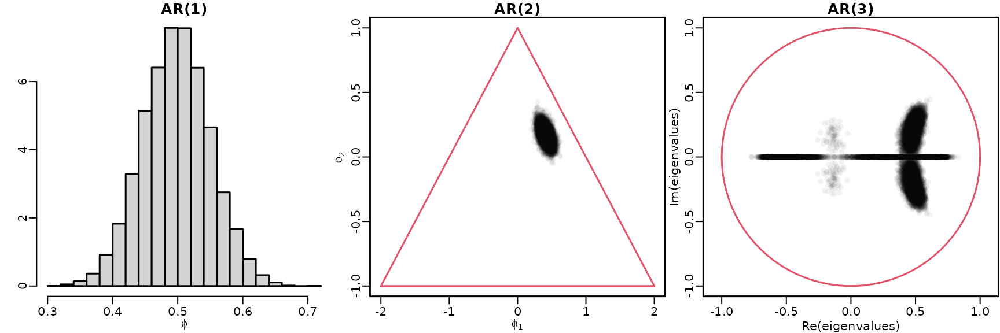
We now move towards analyzing EU inflation data.
data("inflation", package = "BayesianLearningCode")First, we plot the data and its empirical autocorrelation function.
Figure 7.5: EU inflation data
ts.plot(inflation, main = "EU inflation")
acf(inflation, main = "")
title("Empirical autocorrelation function")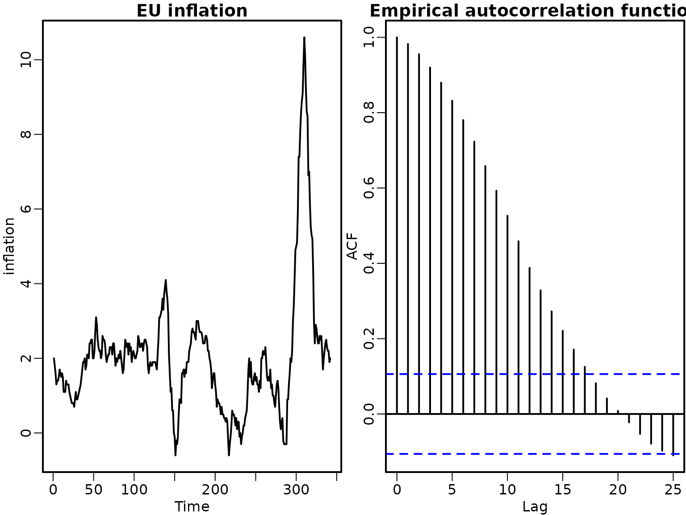
We fit AR() models under the improper prior to explore stationarity for .
Figure 7.6: Checking stationarity conditions for the EU inflation data
ar1draws <- res2[[1]]$betas[, 2]
ar2draws <- res2[[2]]$betas[, 2:3]
ar3draws <- res2[[3]]$betas[, 2:4]
hist(ar1draws, breaks = 20, freq = FALSE, main = "AR(1)",
xlab = bquote(phi), ylab = "")
abline(v = 1, col = 2)
plot(ar2draws, main = "AR(2)", xlab = bquote(phi[1]),
ylab = bquote(phi[2]), xlim = c(-2, 2), ylim = c(-1, 1),
col = rgb(0, 0, 0, .05), pch = 16)
polygon(c(-2, 0, 2, -2), c(-1, 1, -1, -1), border = 2)
eigenvalues <- matrix(NA_complex_, nrow(ar3draws), ncol(ar3draws))
for (m in seq_len(nrow(ar3draws))) {
Phi <- matrix(c(ar3draws[m, ], c(1, 0, 0), c(0, 1, 0)), byrow = TRUE, nrow = 3)
eigenvalues[m, ] <- eigen(Phi, only.values = TRUE)$values
}
plot(eigenvalues, xlim = c(-1, 1), ylim = c(-1, 1), asp = 1,
main = "AR(3)", col = rgb(0, 0, 0, .05), pch = 16)
symbols(0, 0, 1, add = TRUE, fg = 2, inches = FALSE)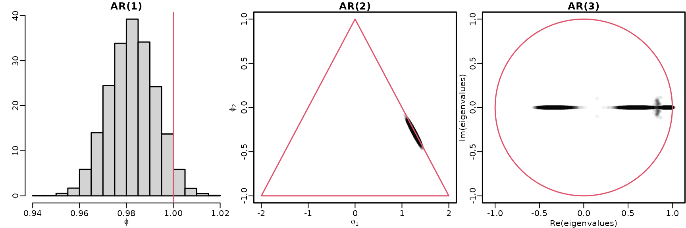
To assess the probability of nonstationarity, we can simply count the draws outside of the stationarity region.
nonstationary <- matrix(NA, nrow(ar3draws), 3,
dimnames = list(NULL, order = 1:3))
nonstationary[, 1] <- abs(ar1draws) > 1
nonstationary[, 2] <- ar2draws[, 1] + ar2draws[, 2] > 1 |
abs(ar2draws[, 2]) > 1 |
ar2draws[, 2] > 1 + ar2draws[, 1]
nonstationary[, 3] <- apply(Mod(eigenvalues) > 1, 1, any)
colMeans(nonstationary)
#> 1 2 3
#> 0.0405 0.0107 0.0031Section 7.2.3: Recovering Missing Time Series Data – An Introduction to Data Augmentation
Assume that the values at certain time points are missing. (Note that for our sampler, we require the missing time points to be far enough apart. This restriction is not substantial, though.)
missing <- seq(10, 100, by = 10)
yaug <- logret
yaug[missing] <- NA_real_To set up the Gibbs sampler, we need starting values for . Here, we interpolate linearly (take the average of the adjacent values).
For simplicity, we employ our improper prior and sample iteratively.
ndraws <- 10000
nburn <- 1000
ind <- missing - 2
ytilde <- rep(NA_real_, 3)
betas <- matrix(NA_real_, ndraws, 3)
sigma2s <- rep(NA_real_, ndraws)
ymisses <- matrix(NA_real_, ndraws, length(ind))
for (m in seq_len(ndraws + nburn)) {
# Augment the observed time series with the missing values
yaug[missing] <- ymiss
# Sample the parameters conditional on the augmented data
Xy <- ARdesignmatrix(yaug, 2)
y <- tail(yaug, -2)
N <- nrow(Xy)
d <- ncol(Xy)
BN <- solve(crossprod(Xy))
bN <- BN %*% crossprod(Xy, y)
cN <- (N - d) / 2
CN <- sum((y - Xy %*% bN)^2) / 2
sigma2 <- rinvgamma(1, cN, CN)
beta <- rmvnorm(1, bN, sigma2 * BN)
zeta <- beta[1]
phi <- beta[2:3]
# Sample the missing values conditional on the parameters
for (i in seq_along(ind)) {
ytilde[1] <- -zeta - phi[1] * y[ind[i] - 1] - phi[2] * y[ind[i] - 2]
ytilde[2] <- -zeta + y[ind[i] + 1] - phi[2] * y[ind[i] - 1]
ytilde[3] <- -zeta + y[ind[i] + 2] - phi[1] * y[ind[i] + 1]
X <- matrix(c(-1, phi), nrow = 3)
BN <- solve(crossprod(X))
bN <- BN %*% crossprod(X, ytilde)
ymiss[i] <- rmvnorm(1, bN, sigma2 * BN)
}
# Store the results
if (m > nburn) {
betas[m - nburn, ] <- beta
sigma2s[m - nburn] <- sigma2
ymisses[m - nburn, ] <- ymiss
}
}Let us briefly check some trace plots and ACFs of the draws.
par(mfrow = c(5, 2))
ts.plot(betas[, 1])
acf(betas[, 1])
ts.plot(betas[, 2])
acf(betas[, 2])
ts.plot(betas[, 3])
acf(betas[, 3])
ts.plot(sigma2s)
acf(sigma2s)
ts.plot(ymisses[, 1])
acf(ymisses[, 1])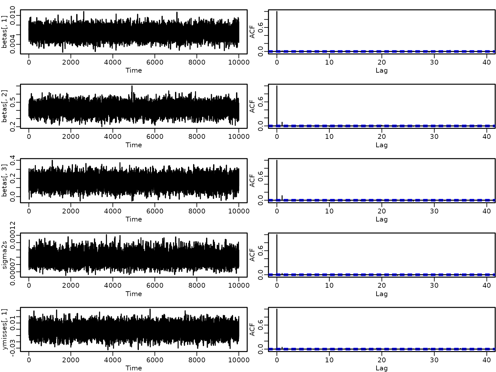
Seems like the mixing is perfect and there is no cause for concern.
We move on to visualizing the observed and the missing values (black lines), alongside the unobservable true values (red circles).
yaug[missing] <- NA
where <- seq(max(missing) - 13, max(missing) + 3)
plot(where, yaug[where], type = "l", ylim = range(ymisses[, i]),
xlab = "Time", ylab = "", main = "U.S. GDP growth")
for (i in seq_along(missing)) {
for (j in seq_len(nrow(ymisses))) {
lines(c(missing[i] - 1, missing[i], missing[i] + 1),
c(yaug[missing[i] - 1], ymisses[j, i], yaug[missing[i] + 1]),
col = rgb(0, 0, 0, .02))
}
points(missing[i], logret[missing[i]], col = 2, cex = 2, pch = 16)
lines(c(missing[i] - 1, missing[i], missing[i] + 1),
c(yaug[missing[i] - 1], logret[missing[i]], yaug[missing[i] + 1]),
col = 2, cex = 2)
}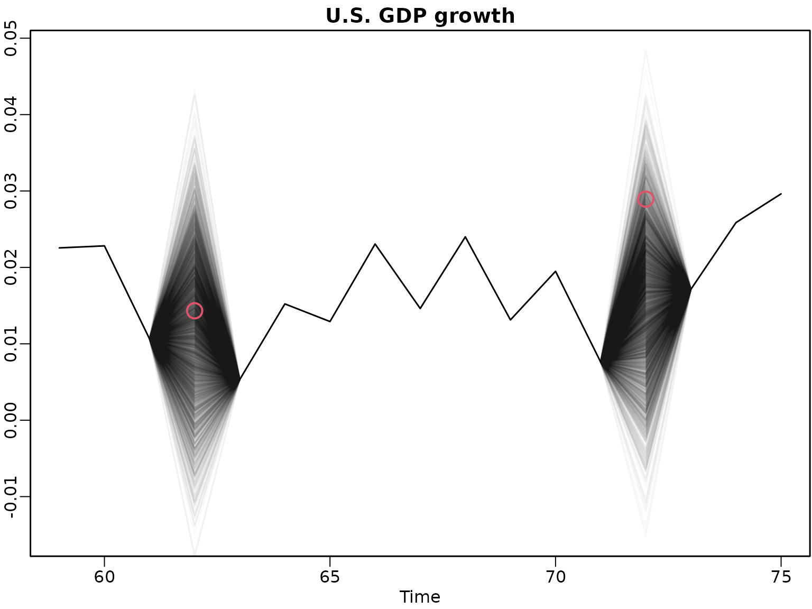
Now let us compare the parameter estimates with the complete-data posterior and the posterior arising when missing values are ignored.
We start by estimating a model where all equations containing missing data are simply dropped.
Xy <- ARdesignmatrix(yaug, 2)
y <- tail(yaug, -2)
containsNA <- apply(is.na(cbind(y, Xy)), 1, any)
yred <- y[!containsNA]
Xyred <- Xy[!containsNA, ]
res_drop <- regression(yred, Xyred, prior = "improper")Now we can plot.
for (i in 1:4) {
if (i <= 3) {
if (i == 1) name <- bquote(zeta) else name <- bquote(phi[.(i - 1)])
dens_improper <- density(res[[2]]$betas[, i], bw = "SJ", adj = 2)
dens_drop <- density(res_drop$betas[, i], bw = "SJ", adj = 2)
dens_aug <- density(betas[, i], bw = "SJ", adj = 2)
} else {
name <- bquote(sigma[epsilon]^2)
dens_improper <- density(res[[2]]$sigma2, bw = "SJ", adj = 2)
dens_drop <- density(res_drop$sigma2, bw = "SJ", adj = 2)
dens_aug <- density(sigma2s, bw = "SJ", adj = 2)
}
plot(dens_improper, xlim = range(dens_improper$x, dens_drop$x, dens_aug$x),
ylim = range(dens_improper$y, dens_drop$y, dens_aug$y),
main = "", xlab = name, ylab = "", col = 3)
lines(dens_aug, col = 2, lty = 2)
lines(dens_drop, lty = 3)
legend("topright", c("Complete-data", "Augmented", "Dropped"),
col = 3:1, lty = 1:3)
}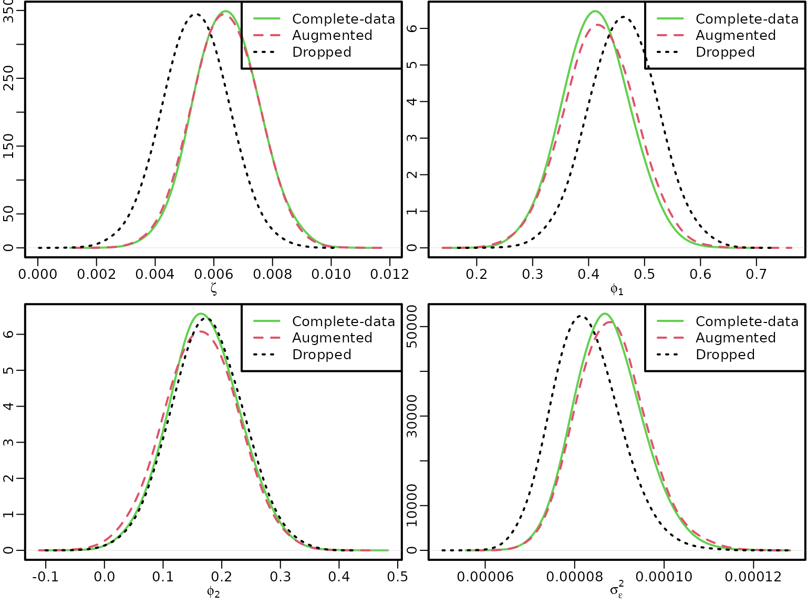
Section 7.2.4: Imposing Stationarity via an Independence MH Algorithm
First, we fit an AR(0), i.e., an intercept-only, model, to the GDP data.
Xy <- ARdesignmatrix(logret, 0) # Fill the N x 1 design matrix with 1s
res0 <- regression(logret, Xy, prior = "improper")We now create Figure 7.9 via simple transformations.
mu <- sigma2 <- matrix(NA_real_, ndraws, 3, dimnames = list(NULL, order = 0:2))
mu[, "0"] <- res0$betas[, 1]
sigma2[, "0"] <- res0$sigma2s
for (p in 1:2) {
mu[, as.character(p)] <- res[[p]]$betas[, 1] /
(1 - rowSums(res[[p]]$betas[, 2:(p + 1), drop = FALSE]))
}
# AR(1):
phi <- res[[1]]$betas[, 2]
sigma2[, "1"] <- res[[1]]$sigma2s / (1 - phi^2)
# AR(2):
phi1 <- res[[2]]$betas[, 2]
phi2 <- res[[2]]$betas[, 3]
sigma2[, "2"] <- (1 - phi2) * res[[1]]$sigma2s /
((1 + phi2) * (1 - phi1^2 + phi2^2 - 2 * phi2))
plot(density(mu[, "0"], bw = "SJ", adj = 2), xlim = range(mu), ylab = "",
main = "Posterior of the marginal mean", xlab = expression(mu))
for (p in 1:2) lines(density(mu[, as.character(p)], bw = "SJ", adj = 2),
col = p + 1, lty = p + 1)
legend("topright", paste0("p = ", 0:2), col = 1:3, lty = 1:3)
plot(density(sigma2[, "0"], bw = "SJ", adj = 2), xlim = range(sigma2),
xlab = expression(sigma^2), ylab = "",
main = "Posterior of the marginal variance")
for (p in 1:2) lines(density(sigma2[, as.character(p)], bw = "SJ", adj = 2),
col = p + 1, lty = p + 1)
legend("topright", paste0("p = ", 0:2), col = 1:3, lty = 1:3)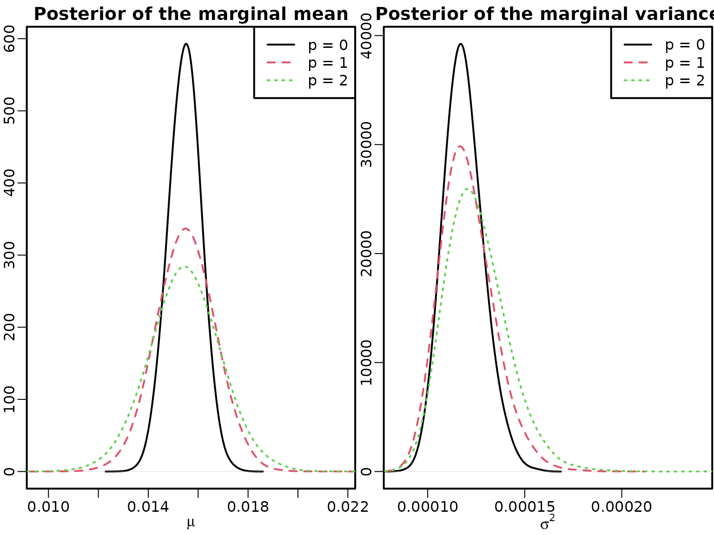
We continue by fitting an AR(0) model to the inflation data.
Xy <- ARdesignmatrix(inflation, 0) # Fill the N x 1 design matrix with 1s
res20 <- regression(inflation, Xy, prior = "improper")Before we can compute unconditional mean and unconditional variance from our fitted AR models, we need to remove nonstationary draws. Apart from that, we proceed as above.
mu <- sigma2 <- list()
mu[["0"]] <- res20$betas[, 1]
sigma2[["0"]] <- res20$sigma2s
for (p in 1:2) {
mu[[as.character(p)]] <- res2[[p]]$betas[!nonstationary[, p], 1] /
(1 - rowSums(res2[[p]]$betas[!nonstationary[, p], 2:(p + 1), drop = FALSE]))
}
# AR(1):
phi <- res2[[1]]$betas[!nonstationary[, 1], 2]
sigma2[["1"]] <- res2[[1]]$sigma2s[!nonstationary[, 1]] / (1 - phi^2)
# AR(2):
phi1 <- res2[[2]]$betas[!nonstationary[, 2], 2]
phi2 <- res2[[2]]$betas[!nonstationary[, 2], 3]
sigma2[["2"]] <- (1 - phi2) * res2[[2]]$sigma2s[!nonstationary[, 2]] /
((1 + phi2) * (1 - phi1^2 + phi2^2 - 2 * phi2))
plot(density(mu[["0"]], bw = "SJ", adj = 2), xlim = range(mu), ylab = "",
main = "Posterior of the marginal mean", xlab = expression(mu))
for (p in 1:2) lines(density(mu[[as.character(p)]], bw = "SJ", adj = 2),
col = p + 1, lty = p + 1)
legend("topright", paste0("p = ", 0:2), col = 1:3, lty = 1:3)
plot(density(sigma2[["0"]], bw = "SJ", adj = 2), xlim = range(sigma2),
xlab = expression(sigma^2), ylab = "",
main = "Posterior of the marginal variance", )
for (p in 1:2) lines(density(sigma2[[as.character(p)]], bw = "SJ", adj = 2),
col = p + 1, lty = p + 1)
legend("topright", paste0("p = ", 0:2), col = 1:3, lty = 1:3)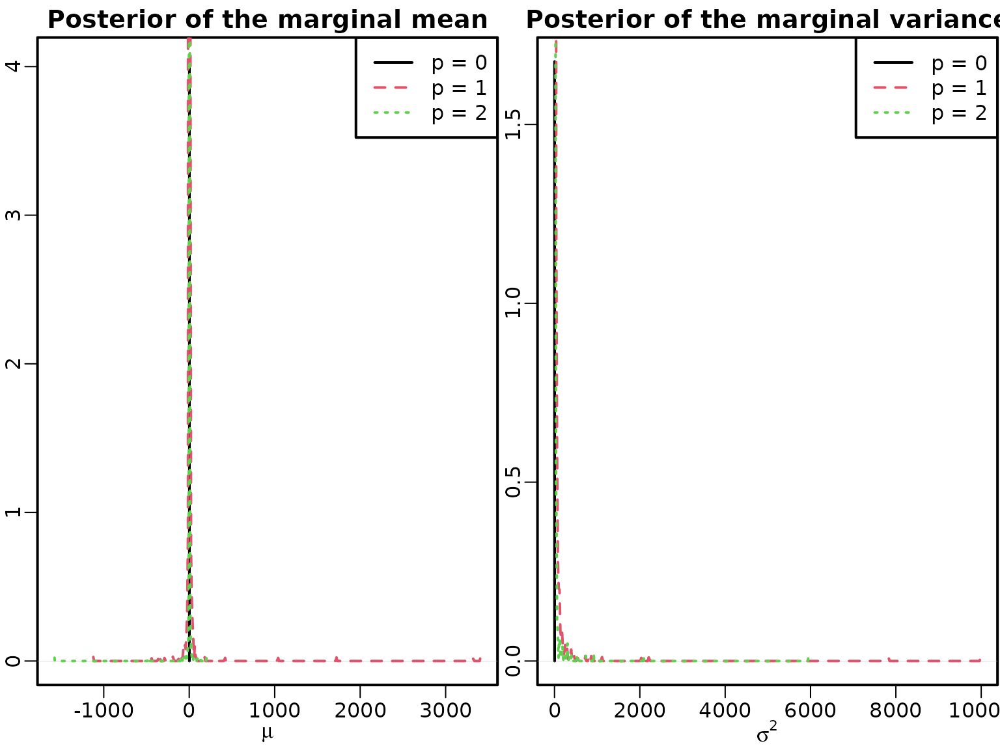
We now move on to imposing stationarity through employing a non-conjugate transformed beta prior on , i.e., and employ a 4-step sampler to obtain posterior draws. In addition, we assume that is unknown and a priori follows the stationary distribution of the AR(1) process.
We start by defining the density function of the rescaled beta.
dbetarescaled <- function(x, a, b, log = FALSE) {
tmp <- dbeta((x + 1) / 2, a, b, log = TRUE) - log(2)
if (log) tmp else exp(tmp)
}We need to specify the hyperparameters and define the left hand side variable as well as the design matrix.
# Specify the hyperparameters
c0 <- 0
C0 <- 0
b0 <- 0
B0 <- Inf
aphi <- 1
bphi <- 1
# Define the design matrix and y
y <- inflation
X <- matrix(NA_real_, nrow = length(y), 2)
X[, 1] <- 1
X[, 2] <- c(NA_real_, y[-length(y)])Now we are ready to sample!
# Allocate some space for the posterior draws and initialize the parameters:
y0s <- sigma2s <- zetas <- phis <- rep(NA_real_, ndraws)
zeta <- 0
phi <- .8
sigma2 <- var(y) * (1 - phi)
naccepts <- 0
for (m in seq_len(ndraws + nburn)) {
# Step (a): Draw y0
y0 <- rnorm(1, zeta + phi * y[1], sqrt(sigma2))
# Step (b): Draw the innovation variance
X[1, 2] <- y0
beta <- matrix(c(zeta, phi), nrow = 2)
tmp <- y - X %*% beta
sigma2 <- rinvgamma(1, c0 + (length(y) + 1) / 2,
C0 + .5 * (1 - phi^2) * (y0 - zeta / (1 - phi))^2 + .5 * crossprod(tmp))
# Step (c): Draw the intercept
BT <- 1 / (1 / B0 + (length(y) + 1) / sigma2)
bT <- BT * (b0 / B0 + ((1 + phi) * y0 +
y[1] - phi * y0 + sum(y[-1] - phi * y[-length(y)])) / sigma2)
zeta <- rnorm(1, bT, sqrt(BT))
# Step (d): Draw the persistence
tmp <- y0^2 + sum(y[-length(y)]^2)
propmean <- (y0 * (y[1] - zeta) + sum(y[-length(y)] * (y[-1] - zeta))) / tmp
propvar <- sigma2 / tmp
phiprop <- rnorm(1, propmean, sqrt(propvar))
if (-1 < phiprop & phiprop < 1) {
logR <- dbetarescaled(phiprop, aphi, bphi, log = TRUE) -
dbetarescaled(phi, aphi, bphi, log = TRUE) +
dnorm(y0, zeta / (1 - phiprop), sqrt(sigma2 / (1 - phiprop^2)),
log = TRUE) -
dnorm(y0, zeta / (1 - phi), sqrt(sigma2 / (1 - phi^2)), log = TRUE)
if (log(runif(1)) < logR) {
phi <- phiprop
if (m > nburn) naccepts <- naccepts + 1L
}
}
# Store the draws
if (m > nburn) {
y0s[m - nburn] <- y0
sigma2s[m - nburn] <- sigma2
zetas[m - nburn] <- zeta
phis[m - nburn] <- phi
}
}
stationary1 <- data.frame(zeta = zetas, phi = phis, sigma2 = sigma2s, y0 = y0s)
naccepts1 <- nacceptsWe repeat the exercise with a more informative beta prior.
aphi <- 10
bphi <- 10
# Allocate some space for the posterior draws and initialize the parameters:
y0s <- sigma2s <- zetas <- phis <- rep(NA_real_, ndraws)
zeta <- 0
phi <- .8
sigma2 <- var(y) * (1 - phi)
naccepts <- 0
for (m in seq_len(ndraws + nburn)) {
# Step (a): Draw y0
y0 <- rnorm(1, zeta + phi * y[1], sqrt(sigma2))
# Step (b): Draw the innovation variance
X[1, 2] <- y0
beta <- matrix(c(zeta, phi), nrow = 2)
tmp <- y - X %*% beta
sigma2 <- rinvgamma(1, c0 + (length(y) + 1) / 2,
C0 + .5 * (1 - phi^2) * (y0 - zeta / (1 - phi))^2 + .5 * crossprod(tmp))
# Step (c): Draw the intercept
BT <- 1 / (1 / B0 + (length(y) + 1) / sigma2)
bT <- BT * (b0 / B0 + ((1 + phi) * y0 +
y[1] - phi * y0 + sum(y[-1] - phi * y[-length(y)])) / sigma2)
zeta <- rnorm(1, bT, sqrt(BT))
# Step (d): Draw the persistence
tmp <- y0^2 + sum(y[-length(y)]^2)
propmean <- (y0 * (y[1] - zeta) + sum(y[-length(y)] * (y[-1] - zeta))) / tmp
propvar <- sigma2 / tmp
phiprop <- rnorm(1, propmean, sqrt(propvar))
if (-1 < phiprop & phiprop < 1) {
logR <- dbetarescaled(phiprop, aphi, bphi, log = TRUE) -
dbetarescaled(phi, aphi, bphi, log = TRUE) +
dnorm(y0, zeta / (1 - phiprop), sqrt(sigma2 / (1 - phiprop^2)),
log = TRUE) -
dnorm(y0, zeta / (1 - phi), sqrt(sigma2 / (1 - phi^2)), log = TRUE)
if (log(runif(1)) < logR) {
phi <- phiprop
if (m > nburn) naccepts <- naccepts + 1L
}
}
# Store the draws
if (m > nburn) {
y0s[m - nburn] <- y0
sigma2s[m - nburn] <- sigma2
zetas[m - nburn] <- zeta
phis[m - nburn] <- phi
}
}
stationary2 <- data.frame(zeta = zetas, phi = phis, sigma2 = sigma2s, y0 = y0s)
naccepts2 <- nacceptsTo conclude, we compare the posteriors of under the improper prior, the posterior obtained after post-processing draws to obtain stationarity, and the posterior under the stationary-enforcing shifted beta priors.
mybreaks <- seq(floor(100 * min(stationary1$phi, stationary2$phi)) / 100,
ceiling(100 * max(ar1draws)) / 100,
by = .005)
hist(stationary2$phi, breaks = mybreaks, col = rgb(1, 1, 0, .2),
main = "Histogram of posterior draws", xlab = expression(phi),
freq = FALSE, ylab = "")
hist(stationary1$phi, breaks = mybreaks, col = rgb(1, 0, 0, .2),
freq = FALSE, add = TRUE)
hist(ar1draws[!nonstationary[, 1]], breaks = mybreaks, col = rgb(0, 0, 1, .2),
freq = FALSE, add = TRUE)
hist(ar1draws, breaks = mybreaks, col = rgb(0, 1, 0, .2),
freq = FALSE, add = TRUE)
legend("topright",
c("Unrestricted posterior", "Post-processed posterior",
"Beta prior posterior (flat)", "Beta prior posterior (shrunken)"),
fill = rgb(c(0, 0, 1, 1), c(1, 0, 0, 1), c(0, 1, 0, 0), .2))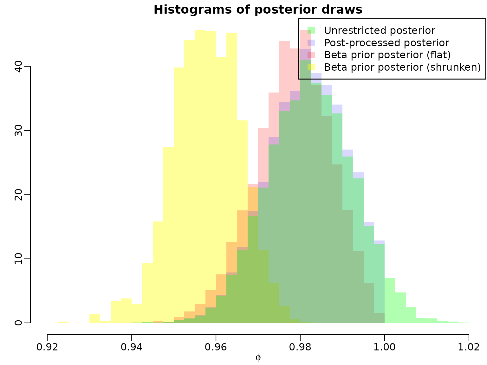
Section 7.2.5: Evaluating the Efficiency of an MCMC Sampler
Example 7.11: Improving the independence MH step
Let us investigate traceplots and empirical autocorrelation functions of the posterior draws under the informative stationarity-inducing prior.
par(mfrow = c(4, 2), mar = c(2.5, 2.8, 1.5, .1), mgp = c(1.5, .5, 0), lwd = 1.5)
for (i in seq_along(stationary2)) {
plot.ts(stationary2[i], xlab = "Draws after burn-in", ylab = labels[i])
if (i == 1) title("Traceplot")
acf(stationary2[i], ylab = "")
if (i == 1) title("Empirical ACF")
}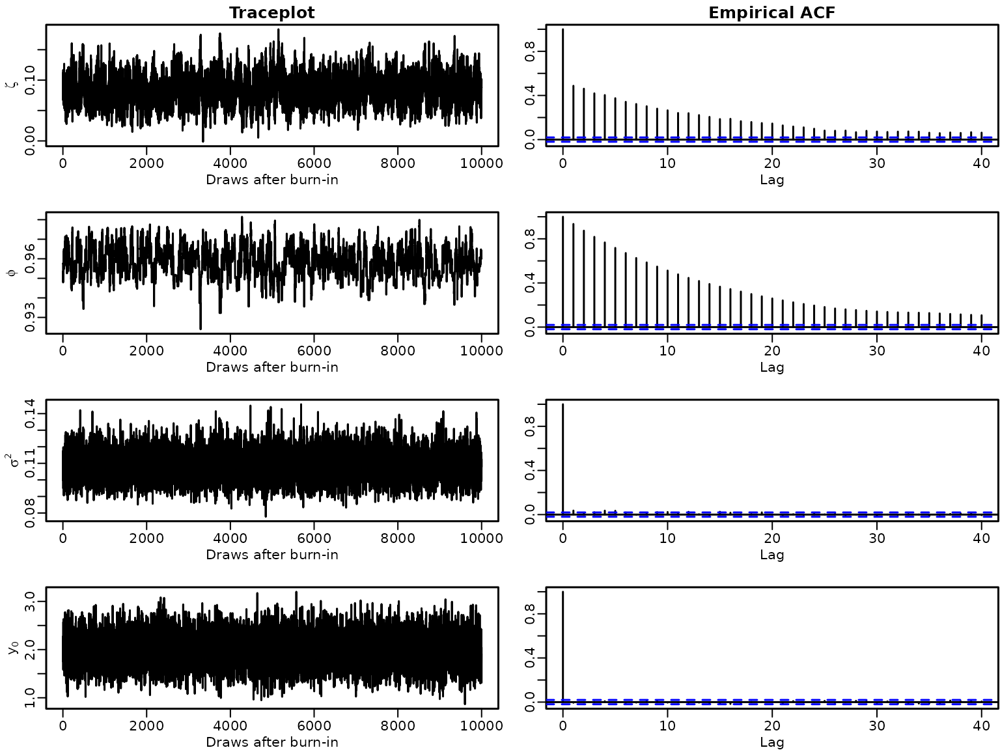
We now compute an estimate of the effective sample size (ESS) and the inefficiency factor (IF) use the coda package.
library("coda")
ess1 <- effectiveSize(data.frame(zeta = res2[[1]]$betas[, 1],
phi = res2[[1]]$betas[, 2],
sigma2 = res2[[1]]$sigma2s))
ess2 <- effectiveSize(data.frame(zeta = res2[[1]]$betas[!nonstationary[, 1], 1],
phi = res2[[1]]$betas[!nonstationary[, 1], 2],
sigma2 = res2[[1]]$sigma2s[!nonstationary[, 1]]))
ess3 <- effectiveSize(stationary1)
ess4 <- effectiveSize(stationary2)
ess <- rbind(unrestricted = c(ess1, y0 = NA),
postprocessed = c(ess2, y0 = NA),
betapriorflat = ess3,
betapriorinformative = ess4)
knitr::kable(round(ess))| zeta | phi | sigma2 | y0 | |
|---|---|---|---|---|
| unrestricted | 9562 | 10000 | 10000 | NA |
| postprocessed | 9202 | 9595 | 9595 | NA |
| betapriorflat | 2179 | 1955 | 9490 | 9255 |
| betapriorinformative | 783 | 398 | 5194 | 10000 |
| zeta | phi | sigma2 | y0 | |
|---|---|---|---|---|
| unrestricted | 1.05 | 1.00 | 1.00 | NA |
| postprocessed | 1.09 | 1.04 | 1.04 | NA |
| betapriorflat | 4.59 | 5.12 | 1.05 | 1.08 |
| betapriorinformative | 12.77 | 25.15 | 1.93 | 1.00 |
We now repeat the above exercise, but use the conditional posterior resulting from an auxiliary moment-matched prior in Step (d).
Note: Currently, three methods are implemented:
Ignore the part coming from and only moment-match the shifted beta prior. This is currently described in the manuscript (auxprior = analytical1)
Use a part coming from the determinant of the density of , resulting in a shifted (auxprior = analytical2)
Numerically approximate mode and curvature of the distribution at every iteration (auxprior = numerical)
auxprior <- "analytical1"
if (auxprior == "analytical1") {
aphiprop <- aphi
bphiprop <- bphi
} else if (auxprior == "analytical2") {
# Add .5 to aphi and bphi (from the determinant of the initial state prior)
aphiprop <- aphi + .5
bphiprop <- bphi + .5
}
if (auxprior != "numerical") {
# Compute mean and variance of the proposal using properties of the beta
auxpriormean <- 2 * aphiprop / (aphiprop + bphiprop) - 1
auxpriorvar <- 4 * (aphiprop * bphiprop) /
((aphiprop + bphiprop)^2 * (aphiprop + bphiprop + 1))
} else {
# For the numerical method, we need the density function of the target
dprior <- function(phi, zeta, sigma2, y0, aphi, bphi, log = FALSE) {
inside <- phi <= 1 & phi >= -1
logdens <- -Inf
logdens[inside] <- dbetarescaled(phi[inside], aphi, bphi, log = TRUE) +
dnorm(y0, zeta / (1 - phi[inside]), sqrt(sigma2 / (1 - phi[inside]^2)),
log = TRUE)
if (log) logdens else exp(logdens)
}
}
# Allocate some space for the posterior draws and initialize the parameters:
y0s <- sigma2s <- zetas <- phis <- rep(NA_real_, ndraws)
zeta <- 0
phi <- .8
sigma2 <- var(y) * (1 - phi)
naccepts <- 0
for (m in seq_len(ndraws + nburn)) {
# Step (a): Draw y0
y0 <- rnorm(1, zeta + phi * y[1], sqrt(sigma2))
# Step (b): Draw the innovation variance
X[1, 2] <- y0
beta <- matrix(c(zeta, phi), nrow = 2)
tmp <- y - X %*% beta
sigma2 <- rinvgamma(1, c0 + (length(y) + 1) / 2,
C0 + .5 * (1 - phi^2) * (y0 - zeta / (1 - phi))^2 + .5 * crossprod(tmp))
# Step (c): Draw the intercept
BT <- 1 / (1 / B0 + (length(y) + 1) / sigma2)
bT <- BT * (b0 / B0 + ((1 + phi) * y0 +
y[1] - phi * y0 + sum(y[-1] - phi * y[-length(y)])) / sigma2)
zeta <- rnorm(1, bT, sqrt(BT))
# Step (d): Draw the persistence
if (auxprior == "numerical") { # overwrites pre-defined mean and variance
mode <- optimize(dprior, c(-1, 1), zeta = zeta, sigma2 = sigma2, y0 = y0,
aphi = aphi, bphi = bphi, log = TRUE, maximum = TRUE)$maximum
dd <- numDeriv::hessian(dprior, mode, zeta = zeta, sigma2 = sigma2, y0 = y0,
aphi = aphi, bphi = bphi)
auxpriormean <- mode
auxpriorvar <- -1 / as.numeric(dd)
}
tmp <- y0^2 + sum(y[-length(y)]^2)
propvar <- 1 / (1 / auxpriorvar + tmp / sigma2)
propmean <- propvar * (auxpriormean / auxpriorvar + (y0 * (y[1] - zeta) +
sum(y[-length(y)] * (y[-1] - zeta))) / sigma2)
phiprop <- rnorm(1, propmean, sqrt(propvar))
if (-1 < phiprop & phiprop < 1) {
logR <- dbetarescaled(phiprop, aphi, bphi, log = TRUE) -
dbetarescaled(phi, aphi, bphi, log = TRUE) +
dnorm(y0, zeta / (1 - phiprop), sqrt(sigma2 / (1 - phiprop^2)),
log = TRUE) -
dnorm(y0, zeta / (1 - phi), sqrt(sigma2 / (1 - phi^2)), log = TRUE) +
dnorm(phi, auxpriormean, sqrt(auxpriorvar), log = TRUE) -
dnorm(phiprop, auxpriormean, sqrt(auxpriorvar), log = TRUE)
if (log(runif(1)) < logR) {
phi <- phiprop
if (m > nburn) naccepts <- naccepts + 1L
}
}
# Store the draws
if (m > nburn) {
y0s[m - nburn] <- y0
sigma2s[m - nburn] <- sigma2
zetas[m - nburn] <- zeta
phis[m - nburn] <- phi
}
}
stationary3 <- data.frame(zeta = zetas, phi = phis, sigma2 = sigma2s, y0 = y0s)
naccepts3 <- nacceptsAgain, we investigate traceplots and empirical autocorrelation functions of the draws. In addition, we check the percentage of accepted draws in MH-step (d).
par(mfrow = c(4, 2), mar = c(2.5, 2.8, 1.5, .1), mgp = c(1.5, .5, 0), lwd = 1.5)
for (i in seq_along(stationary3)) {
plot.ts(stationary3[i], xlab = "Draws after burn-in", ylab = labels[i])
if (i == 1) title("Traceplot")
acf(stationary3[i], ylab = "")
if (i == 1) title("Empirical ACF")
}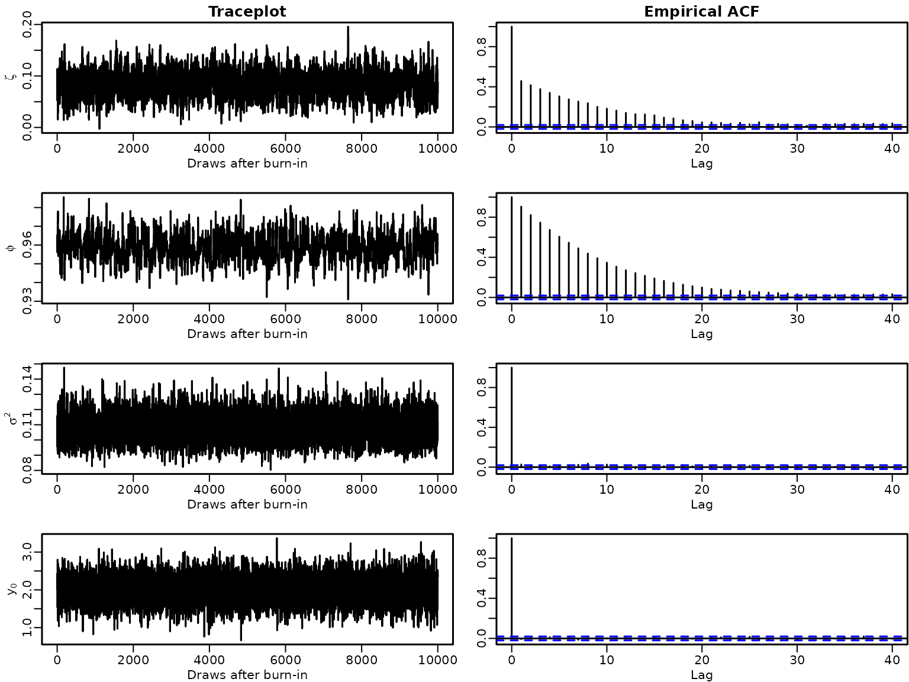
We now compare the draws from the two samplers; they should yield draws from the same distribution, irrespective of the acceptance rate and thus the mixing of the Markov chain. We graphically check this by comparing histograms and quantiles of draws from the marginal posterior of .
mybreaks <- seq(min(stationary2$phi, stationary3$phi),
max(stationary2$phi, stationary3$phi),
length.out = 30)
hist(stationary2$phi, breaks = mybreaks, col = rgb(0, 0, 1, .3),
main = "Histogram", xlab = expression(phi), freq = FALSE, ylab = "")
hist(stationary3$phi, breaks = mybreaks, col = rgb(1, 0, 0, .3), freq = FALSE,
add = TRUE)
legend("topleft", c("Sampler 1", "Sampler 2"), fill = rgb(0:1, 0, 1:0, .3))
qqplot(stationary2$phi, stationary3$phi, xlab = "Sampler 1", ylab = "Sampler 2",
main = "QQ plot")
abline(0, 1, col = 2)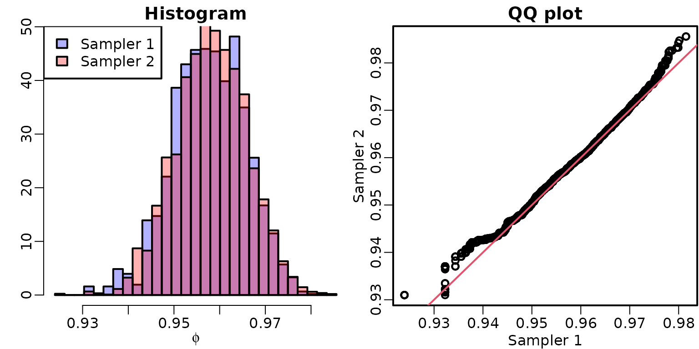
We can see that the draws appear to come from the same distribution. Note, however, that the first sampler gets “stuck” slightly below 0.93 for a few draws, which isn’t the case for the second sampler.
To conclude, we compute ESSs and IFs for the sampler utilizing the optimized MH step.
ess1 <- effectiveSize(stationary2)
ess2 <- effectiveSize(stationary3)
ess <- rbind(`Sampler 1` = ess1, `Sampler 2` = ess2)
knitr::kable(round(ess))| zeta | phi | sigma2 | y0 | |
|---|---|---|---|---|
| Sampler 1 | 783 | 398 | 5194 | 10000 |
| Sampler 2 | 1042 | 549 | 6342 | 10000 |
| zeta | phi | sigma2 | y0 | |
|---|---|---|---|---|
| Sampler 1 | 12.77 | 25.15 | 1.93 | 1 |
| Sampler 2 | 9.60 | 18.23 | 1.58 | 1 |
Section 7.3: Some Extensions
Section 7.3.1: AR Models with a Unit Root
Let us check for stationarity of the exchange rate data. First, we load the data and visualize it as well as its empirical ACF. We do the same for the absolute returns.
data("exrates", package = "stochvol")
dat <- exrates$USD / exrates$CHF
ret <- diff(dat)
plot(dat, type = "l", main = "CHF-USD exchange rate", xlab = "Days",
ylab = "CHF in USD")
plot(ret, type = "l", main = "CHF-USD daily returns", xlab = "Days",
ylab = "CHF-USD")
acf(dat)
acf(ret)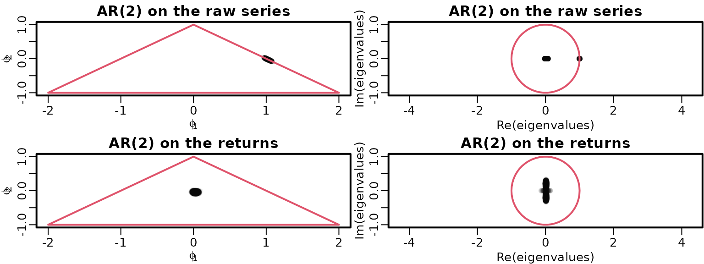
This clearly hints at non-stationarity of the exchange rate series and at (first order) stationarity of the returns. To check more formally, we fit AR(p) models to both.
ardat <- arret <- list()
for (p in 1:4) {
y <- tail(dat, -p)
Xy <- ARdesignmatrix(dat, p)
ardat[[p]] <- regression(y, Xy, prior = "improper")
y <- tail(ret, -p)
Xy <- ARdesignmatrix(ret, p)
arret[[p]] <- regression(y, Xy, prior = "improper")
}Now we can graphically investigate stationarity as above.
draws <- list(ardat[[2]]$betas[, 2:3], arret[[2]]$betas[, 2:3])
eigenvalues <- matrix(NA_complex_, nrow(draws[[1]]), ncol(draws[[1]]))
mains <- c("AR(2) on the raw series", "AR(2) on the returns")
for (i in seq_along(draws)) {
plot(draws[[i]], main = mains[i], xlab = bquote(phi[1]),
ylab = bquote(phi[2]), xlim = c(-2, 2), ylim = c(-1, 1),
col = rgb(0, 0, 0, .05), pch = 16)
polygon(c(-2, 0, 2, -2), c(-1, 1, -1, -1), border = 2)
for (m in seq_len(nrow(draws[[i]]))) {
Phi <- matrix(c(draws[[i]][m, ], c(1, 0)), byrow = TRUE, nrow = 2)
eigenvalues[m, ] <- eigen(Phi, only.values = TRUE)$values
}
plot(eigenvalues, xlim = c(-1, 1), ylim = c(-1, 1), asp = 1,
main = mains[i], col = rgb(0, 0, 0, .05), pch = 16)
symbols(0, 0, 1, add = TRUE, fg = 2, inches = FALSE)
}To explore whether the nonstationarity of the raw series could be caused by a unit root, we investigate the posterior of for .
toplot <- matrix(NA_real_, ndraws, 4)
for (p in 1:4)
toplot[, p] <- 1 - rowSums(ardat[[p]]$betas[, 2:(p + 1), drop = FALSE])
for (p in 1:4) {
hist(toplot[, p], freq = FALSE,
breaks = seq(min(toplot), max(toplot), length.out = 20),
main = paste0("AR(", p, ")"), xlab = expression(delta), ylab = "")
abline(v = 0, lty = 2, col = 2)
}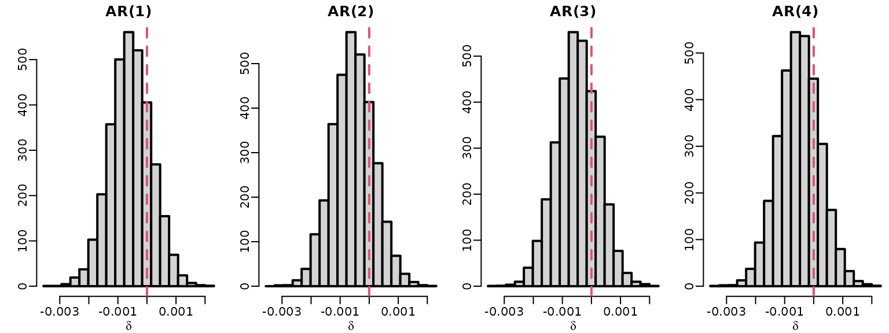
We do the same for the inflation data.
ardat <- arret <- list()
for (p in 1:4) {
y <- tail(inflation, -p)
Xy <- ARdesignmatrix(inflation, p)
ardat[[p]] <- regression(y, Xy, prior = "improper")
}
for (p in 1:4)
toplot[, p] <- 1 - rowSums(ardat[[p]]$betas[, 2:(p + 1), drop = FALSE])
for (p in 1:4) {
hist(toplot[, p], freq = FALSE,
breaks = seq(min(toplot), max(toplot), length.out = 20),
main = paste0("AR(", p, ")"), xlab = expression(delta), ylab = "")
abline(v = 0, lty = 2, col = 2)
}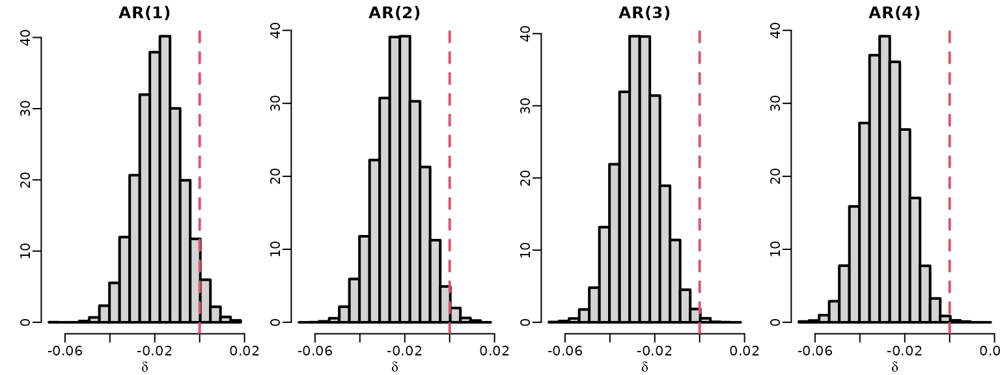
Section 7.3.2: Bayesian Learning of an MA(1) Model
We now implement the MCMC sampler for fitting an MA(1) model, where we treat the latent state as unknown. For the innovation variance, we assume an inverse gamma prior, and is assumed to be a priori uniform on .
# Specify prior hyperparameters
c0 <- C0 <- 0.01
# standard deviation for random walk MH proposal
cthetas <- c(.0005, .005, .05)
# Allocate space for the draws
eps0s <- sigma2s <- thetas <- matrix(NA_real_, ndraws, length(cthetas))
naccepts <- rep(0L, length(cthetas))
for (i in seq_along(cthetas)) {
# Set the starting values
theta <- 0.9
sigma2 <- var(dat) / 2
# MCMC loop
for (m in seq_len(ndraws + nburn)) {
# Sample epsilon_0
bs <- (-theta)^seq_along(dat)
as <- filter(dat, -theta, "recursive")
tmp <- 1 + sum(bs^2)
eps0 <- rnorm(1, -sum(as * bs) / tmp, sqrt(sigma2 / tmp))
# Sample sigma^2
eps <- filter(dat, -theta, "recursive", init = eps0)
cN <- c0 + (length(dat) + 1) / 2
CN <- C0 + 0.5 * (eps0^2 + sum(eps^2))
sigma2 <- rinvgamma(1, cN, CN)
# Sample theta via RW-MH
thetaprop <- rnorm(1, theta, cthetas[i])
epsprop <- filter(dat, -thetaprop, "recursive", init = eps0)
# Now we accept/reject. Note that because we have a uniform prior on
# (-1, 1), it suffices to check whether the proposed value is in that
# interval and we do not need to include the prior in the acceptance ratio
if (abs(thetaprop) < 1) {
logR <- -0.5 / sigma2 * (sum(epsprop^2) - sum(eps^2))
if (log(runif(1)) < logR) {
theta <- thetaprop
if (m > nburn) naccepts[i] <- naccepts[i] + 1L
}
}
# Store the results
if (m > nburn) {
eps0s[m - nburn, i] <- eps0
sigma2s[m - nburn, i] <- sigma2
thetas[m - nburn, i] <- theta
}
}
}Now we plot traceplots and ACFs.
for (i in seq_along(cthetas)) {
ts.plot(thetas[, i], ylim = range(thetas), ylab = expression(theta),
xlab = "Iterations")
title(bquote(Traceplot ~ (c[theta] == .(cthetas[i]))))
acf(thetas[, i], ylab = "")
title(bquote(ACF ~ (acceptance == .(round(naccepts[i] / ndraws, 3))*","~
IF == .(round(ndraws / coda::effectiveSize(thetas[, i]), 1)))))
}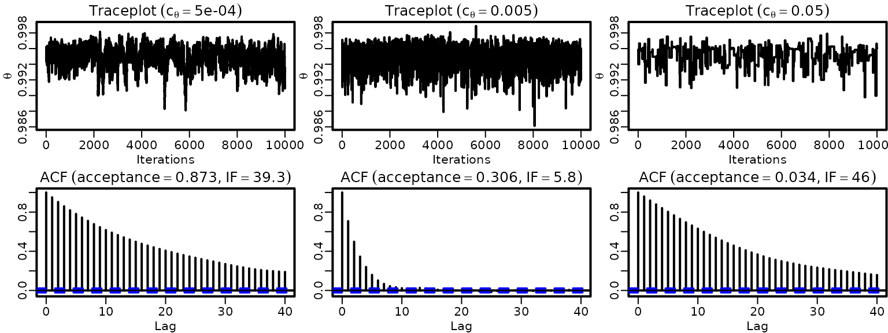
We repeat the exercise above, but now use a truncated Gaussian proposal for the random walk MH algorithm.
# standard deviation for random walk MH proposal
cthetas2 <- cthetas
# Allocate space for the draws
eps0s2 <- sigma2s2 <- thetas2 <- matrix(NA_real_, ndraws, length(cthetas2))
naccepts2 <- rep(0L, length(cthetas2))
for (i in seq_along(cthetas2)) {
# Set the starting values
theta <- 0.9
sigma2 <- var(dat) / 2
# MCMC loop
for (m in seq_len(ndraws + nburn)) {
# Sample epsilon_0
bs <- (-theta)^seq_along(dat)
as <- filter(dat, -theta, "recursive")
tmp <- 1 + sum(bs^2)
eps0 <- rnorm(1, -sum(as * bs) / tmp, sqrt(sigma2 / tmp))
# Sample sigma^2
eps <- filter(dat, -theta, "recursive", init = eps0)
cN <- c0 + (length(dat) + 1) / 2
CN <- C0 + 0.5 * (eps0^2 + sum(eps^2))
sigma2 <- rinvgamma(1, cN, CN)
# Sample theta via RW-MH using inverse transform sampling
# for the truncated Gaussian
pL <- pnorm(-1, theta, cthetas2[i])
pU <- pnorm(1, theta, cthetas2[i])
norm <- pU - pL
U <- runif(1)
thetaprop <- qnorm(pL + U * norm, theta, cthetas2[i])
epsprop <- filter(dat, -thetaprop, "recursive", init = eps0)
normprop <- diff(pnorm(c(-1, 1), thetaprop, cthetas2[i]))
# Now we accept/reject. Note that because we have a uniform prior on
# (-1, 1) and, due to the truncated proposal, we can be sure that a
# value within (-1, 1) is proposed, we do not need to include the
# prior in the acceptance ratio. However, we need to cater for the
# asymmetry of the proposal!
logR <- -0.5 / sigma2 * (sum(epsprop^2) - sum(eps^2)) +
log(norm) - log(normprop)
if (log(runif(1)) < logR) {
theta <- thetaprop
if (m > nburn) naccepts2[i] <- naccepts2[i] + 1L
}
# Store the results
if (m > nburn) {
eps0s2[m - nburn, i] <- eps0
sigma2s2[m - nburn, i] <- sigma2
thetas2[m - nburn, i] <- theta
}
}
}We again plot traceplots and ACFs.
for (i in seq_along(cthetas2)) {
ts.plot(thetas2[, i], ylim = range(thetas2), ylab = expression(theta),
xlab = "Iterations")
title(bquote(Traceplot ~ (c[theta] == .(cthetas2[i]))))
acf(thetas2[, i], ylab = "")
title(bquote(ACF ~ (acceptance == .(round(naccepts2[i] / ndraws, 3))*","~
IF == .(round(ndraws / coda::effectiveSize(thetas2[, i]), 1)))))
}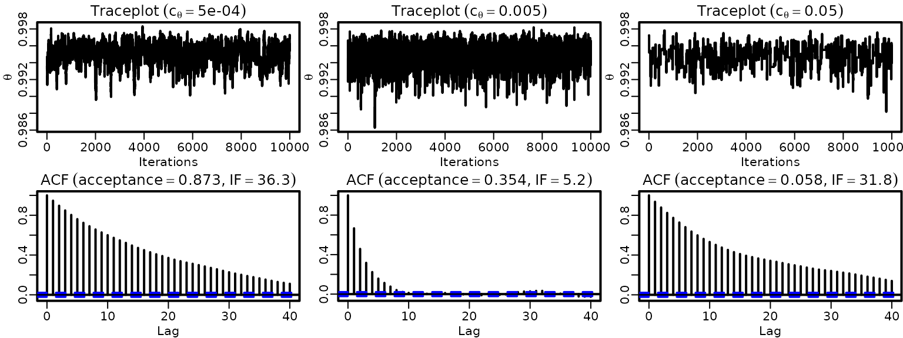
We repeat the exercise above once more, but now use a random walk proposal on .
# Define the transformation and its inverse
trans <- function(theta) log(1 + theta) - log(1 - theta)
invtrans <- function(thetatrans) (exp(thetatrans) - 1) / (exp(thetatrans) + 1)
# standard deviation for random walk MH proposal
cthetas3 <- 100 * cthetas2
# Allocate space for the draws
eps0s3 <- sigma2s3 <- thetas3 <- matrix(NA_real_, ndraws, length(cthetas3))
naccepts3 <- rep(0L, length(cthetas3))
for (i in seq_along(cthetas3)) {
# Set the starting values
theta <- 0.9
sigma2 <- var(dat) / 2
# MCMC loop
for (m in seq_len(ndraws + nburn)) {
# Sample epsilon_0
bs <- (-theta)^seq_along(dat)
as <- filter(dat, -theta, "recursive")
tmp <- 1 + sum(bs^2)
eps0 <- rnorm(1, -sum(as * bs) / tmp, sqrt(sigma2 / tmp))
# Sample sigma^2
eps <- filter(dat, -theta, "recursive", init = eps0)
cN <- c0 + (length(dat) + 1) / 2
CN <- C0 + 0.5 * (eps0^2 + sum(eps^2))
sigma2 <- rinvgamma(1, cN, CN)
# Sample theta via RW-MH on a trans(theta)
thetatransprop <- rnorm(1, trans(theta), cthetas3[i])
thetaprop <- invtrans(thetatransprop)
epsprop <- filter(dat, -thetaprop, "recursive", init = eps0)
# Now we accept/reject. Note that because we have a uniform prior on
# (-1, 1) and, due to the transformation, we can be sure that a
# value within (-1, 1) is proposed, we do not need to include the
# prior in the acceptance ratio. However, we need to cater for the
# asymmetry of the proposal!
logR <- -0.5 / sigma2 * (sum(epsprop^2) - sum(eps^2)) +
log(1 - thetaprop^2) - log(1 - theta^2)
if (log(runif(1)) < logR) {
theta <- thetaprop
if (m > nburn) naccepts3[i] <- naccepts3[i] + 1L
}
# Store the results
if (m > nburn) {
eps0s3[m - nburn, i] <- eps0
sigma2s3[m - nburn, i] <- sigma2
thetas3[m - nburn, i] <- theta
}
}
}We again plot traceplots and ACFs.
for (i in seq_along(cthetas3)) {
ts.plot(thetas3[, i], ylim = range(thetas3), ylab = expression(theta),
xlab = "Iterations")
title(bquote(Traceplot ~ (c[theta] == .(cthetas3[i]))))
acf(thetas3[, i], ylab = "")
title(bquote(ACF ~ (acceptance == .(round(naccepts3[i] / ndraws, 3))*","~
IF == .(round(ndraws / coda::effectiveSize(thetas3[, i]), 1)))))
}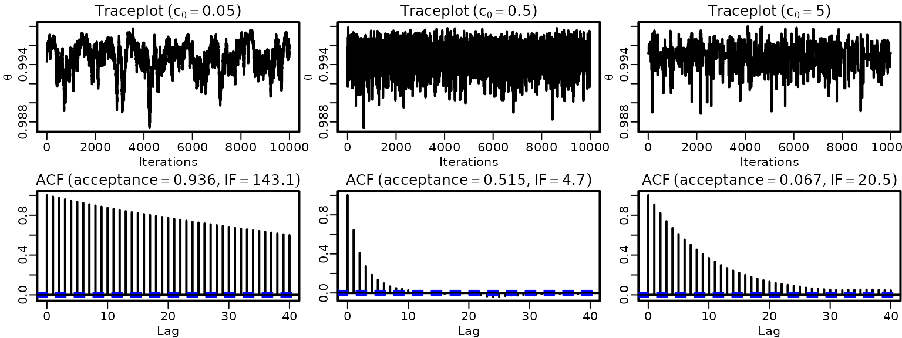
Let’s also check some QQ plots for equivalence.
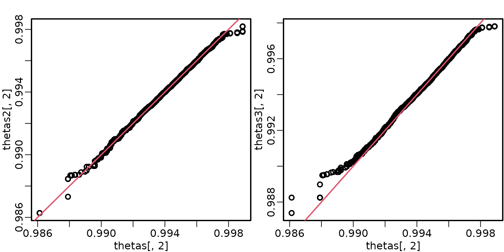
Now, we compare acceptance rates and inefficiency factors for all 9 samplers.
accepts <- matrix(c(naccepts, naccepts2, naccepts3) / ndraws,
nrow = length(naccepts), ncol = 3, byrow = TRUE)
ESS <- matrix(coda::effectiveSize(cbind(thetas, thetas2, thetas3)),
nrow = ncol(thetas), ncol = 3, byrow = TRUE)
colnames(ESS) <- colnames(accepts) <- c("tiny", "medium", "huge")
rownames(ESS) <- rownames(accepts) <- c("Gaussian RW", "truncated RW",
"transformed RW")
IF <- ndraws / ESS
knitr::kable(round(accepts, 2))| tiny | medium | huge | |
|---|---|---|---|
| Gaussian RW | 0.87 | 0.31 | 0.03 |
| truncated RW | 0.87 | 0.35 | 0.06 |
| transformed RW | 0.93 | 0.52 | 0.07 |
| tiny | medium | huge | |
|---|---|---|---|
| Gaussian RW | 41.3 | 5.4 | 46.7 |
| truncated RW | 36.5 | 5.2 | 31.5 |
| transformed RW | 155.6 | 4.7 | 20.8 |
Section 7.4: Markov modeling for a panel of categorical time series
Example 7.13: Wage mobility data
We load the data and only consider workers from the birth cohort 1946-1960.
data("labor", package = "BayesianLearningCode")
labor <- subset(labor, birthyear >= 1946 & birthyear <= 1960)
nrow(labor)
#> [1] 1538We extract the columns about the income over time:
income <- labor[, grepl("^income", colnames(labor))]
income <- sapply(income, as.integer)
colnames(income) <- gsub("income_", "", colnames(income))We plot individual wage mobility time series for three workers. The persistence of belonging to a certain wage class is obvious for any specific person.
set.seed(1)
index <- sample(nrow(income), 3)
for (i in index) {
plot(as.integer(colnames(income)), income[i, ] - 1,
main = paste("Person", i), pch = 19, ylim = c(0, 5),
xlab = "Year", ylab = "Income class")
}
Example 7.14: Wage mobility data – comparing wage mobility of men and women
We transform the data to obtain for each worker the matrix which contains the number of transitions from one class to the other, i.e., the matrix with values .
getTransitions <- function(x, classes) {
transitions <- matrix(0, length(classes), length(classes))
for (i in seq_len(length(x) - 1)) {
transitions[x[i], x[i + 1]] <- transitions[x[i], x[i + 1]] + 1
}
dimnames(transitions) <- list(from = classes, to = classes)
transitions
}
income_transitions <-
lapply(seq_len(nrow(income)),
function(i) getTransitions(income[i, ], classes = 0:5))Based on the transition matrices, the total transitions between the wage categories for female and male workers can be obtained.
N_female <- Reduce("+", income_transitions[labor$female])
N_male <- Reduce("+", income_transitions[!labor$female])
knitr::kable(N_female)| 0 | 1 | 2 | 3 | 4 | 5 | |
|---|---|---|---|---|---|---|
| 0 | 1651 | 300 | 97 | 49 | 22 | 15 |
| 1 | 223 | 1682 | 151 | 17 | 3 | 1 |
| 2 | 74 | 96 | 1056 | 117 | 14 | 1 |
| 3 | 48 | 10 | 67 | 574 | 107 | 2 |
| 4 | 37 | 2 | 2 | 45 | 717 | 64 |
| 5 | 24 | 1 | 0 | 3 | 22 | 446 |
knitr::kable(N_male)| 0 | 1 | 2 | 3 | 4 | 5 | |
|---|---|---|---|---|---|---|
| 0 | 1655 | 121 | 153 | 74 | 53 | 36 |
| 1 | 89 | 307 | 87 | 23 | 5 | 1 |
| 2 | 98 | 56 | 926 | 211 | 15 | 1 |
| 3 | 100 | 21 | 150 | 1433 | 255 | 6 |
| 4 | 73 | 7 | 12 | 191 | 1755 | 199 |
| 5 | 50 | 2 | 2 | 11 | 147 | 2391 |
We obtain posterior mean estimates based on a uniform prior.
mean_xi_female <- (1 + N_female) / rowSums(1 + N_female)
mean_xi_male <- (1 + N_male) / rowSums(1 + N_male)
knitr::kable(mean_xi_female, digits = 3)| 0 | 1 | 2 | 3 | 4 | 5 | |
|---|---|---|---|---|---|---|
| 0 | 0.772 | 0.141 | 0.046 | 0.023 | 0.011 | 0.007 |
| 1 | 0.108 | 0.808 | 0.073 | 0.009 | 0.002 | 0.001 |
| 2 | 0.055 | 0.071 | 0.775 | 0.087 | 0.011 | 0.001 |
| 3 | 0.060 | 0.014 | 0.084 | 0.706 | 0.133 | 0.004 |
| 4 | 0.044 | 0.003 | 0.003 | 0.053 | 0.822 | 0.074 |
| 5 | 0.050 | 0.004 | 0.002 | 0.008 | 0.046 | 0.890 |
knitr::kable(mean_xi_male, digits = 3)| 0 | 1 | 2 | 3 | 4 | 5 | |
|---|---|---|---|---|---|---|
| 0 | 0.789 | 0.058 | 0.073 | 0.036 | 0.026 | 0.018 |
| 1 | 0.174 | 0.595 | 0.170 | 0.046 | 0.012 | 0.004 |
| 2 | 0.075 | 0.043 | 0.706 | 0.161 | 0.012 | 0.002 |
| 3 | 0.051 | 0.011 | 0.077 | 0.728 | 0.130 | 0.004 |
| 4 | 0.033 | 0.004 | 0.006 | 0.086 | 0.783 | 0.089 |
| 5 | 0.020 | 0.001 | 0.001 | 0.005 | 0.057 | 0.917 |
We also visualize the posterior mean estimates for women and men.
corrplot::corrplot(mean_xi_female, method = "square", is.corr = FALSE,
col = 1, cl.pos = "n")
corrplot::corrplot(mean_xi_male, method = "square", is.corr = FALSE,
col = 1, cl.pos = "n")
We compare the posterior densities of various transition probabilities for women and men.
plot(c(0.52, 0.95), c(0, 100), type = "n", xlab = "", ylab = "",
main = "Posterior of persistence probabilities")
pers_female <- cbind(diag(1 + N_female),
rowSums(1 + N_female) - diag(1 + N_female))
pers_male <- cbind(diag(1 + N_male),
rowSums(1 + N_male) - diag(1 + N_male))
for (i in 2:6) {
curve(dbeta(x, pers_female[i, 1], pers_female[i, 2]),
col = i, add = TRUE, n = 1001, lty = 1)
curve(dbeta(x, pers_male[i, 1], pers_male[i, 2]),
col = i, add = TRUE, n = 1001, lty = 2)
}
legend("topleft", col = 2:6, lty = 1,
legend = sapply(2:6, function(i)
substitute(xi[i], list(i = (i-1) * 11))))
legend("topright", col = 1, lty = 1:2,
legend = c("female", "male"))
plot(c(0.03, 0.23), c(0, 90), type = "n", xlab = "", ylab = "",
main = "Posterior of transition probabilities")
trans_female <- cbind((1 + N_female)[cbind(1:5, 2:6)],
rowSums(1 + N_female)[1:5] - (1 + N_female)[cbind(1:5, 2:6)])
trans_male <- cbind((1 + N_male)[cbind(1:5, 2:6)],
rowSums(1 + N_male)[1:5] - (1 + N_male)[cbind(1:5, 2:6)])
for (i in 2:5) {
curve(dbeta(x, trans_female[i, 1], trans_female[i, 2]),
col = i, add = TRUE, n = 1001, lty = 1)
curve(dbeta(x, trans_male[i, 1], trans_male[i, 2]),
col = i, add = TRUE, n = 1001, lty = 2)
}
legend("topleft", col = 2:5, lty = 1,
legend = sapply(2:5, function(i)
substitute(xi[i], list(i = c(01, 12, 23, 34, 45)[i]))))
legend("topright", col = 1, lty = 1:2,
legend = c("female", "male"))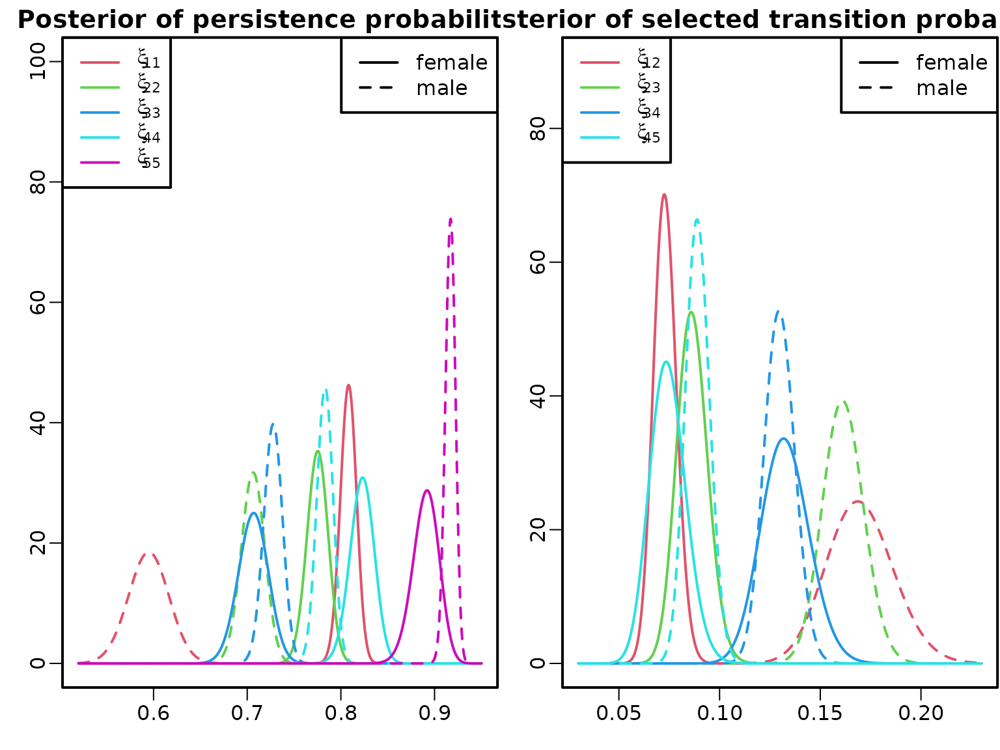
Example 7.15: Wage mobility data – long run
We assume that both men and women start out in the labor market with the same wage distribution, where 70% start in wage category 1 and 30% in wage category 2, i.e., . We compare the evolution of the estimated wage distribution over the first ten years for females and males.
eta_0 <- c(0, 0.7, 0.3, 0, 0, 0)
eta_hat_male_t <- eta_hat_female_t <-
matrix(NA_real_, nrow = 6, ncol = 11,
dimnames = list(0:5, 0:10))
eta_hat_male_t[, 1] <- eta_hat_female_t[, 1] <- eta_0
for (i in 2:11) {
eta_hat_female_t[, i] <- eta_hat_female_t[, i - 1] %*% mean_xi_female
eta_hat_male_t[, i] <- eta_hat_male_t[, i - 1] %*% mean_xi_male
}
barplot(eta_hat_female_t, main = "Women", xlab = "Year", ylab = "Wage groups")
barplot(eta_hat_male_t, main = "Men", xlab = "Year", ylab = "Wage groups")
We inspect the posterior distributions of for wage category 2 (left-hand side) versus for wage category 5 (right-hand side) in year for females and males.
M <- 1000
xi_female <- replicate(M, apply(1 + N_female, 1,
function(alpha) rdirichlet(1, alpha)))
xi_male <- replicate(M, apply(1 + N_male, 1,
function(alpha) rdirichlet(1, alpha)))
eta_male_t <- eta_female_t <- matrix(eta_0, nrow = M, ncol = 6,
byrow = TRUE)
for (i in 2:11) {
eta_female_t <- t(sapply(1:M, function(m)
xi_female[, , m] %*% eta_female_t[m, ]))
eta_male_t <- t(sapply(1:M, function(m)
xi_male[, , m] %*% eta_male_t[m, ]))
}
breaks <- seq(0.14, 0.26, length.out = 30)
hist(eta_male_t[, 3], breaks = breaks, xlim = range(breaks),
col = rgb(1, 0, 0, 0.2), xlab = "", main = "Wage category 2")
hist(eta_female_t[, 3], breaks = breaks, col = rgb(0, 0, 0, 0.2), add = TRUE)
legend("topright", c("female", "male"), fill = rgb(c(0, 1), 0, 0, 0.2))
breaks <- seq(0, 0.15, length.out = 30)
hist(eta_female_t[, 6], breaks = breaks, xlim = range(breaks),
col = rgb(0, 0, 0, 0.2), xlab = "", main = "Wage category 5")
hist(eta_male_t[, 6], breaks = breaks,
col = rgb(1, 0, 0, 0.2), add = TRUE)
legend("topright", c("female", "male"), fill = rgb(c(0, 1), 0, 0, 0.2))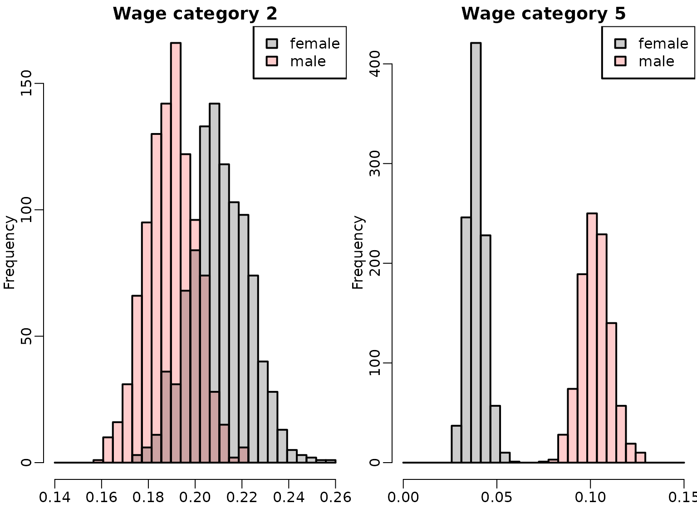